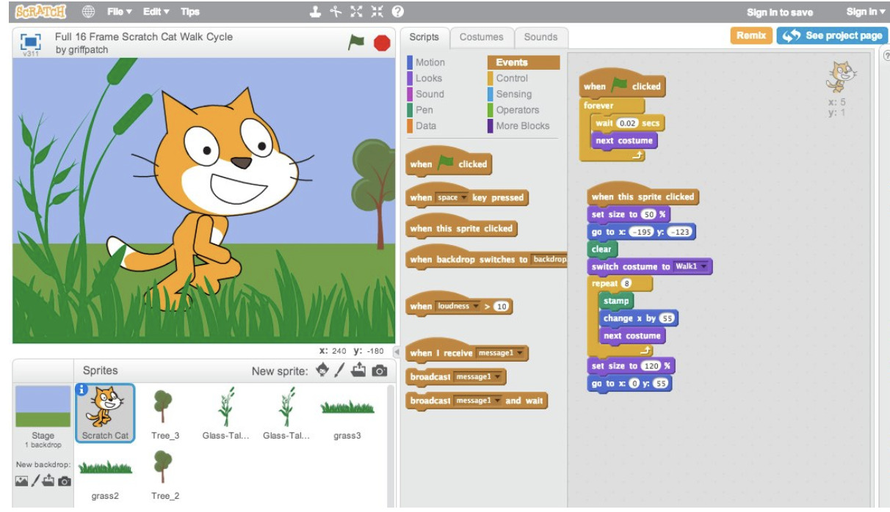
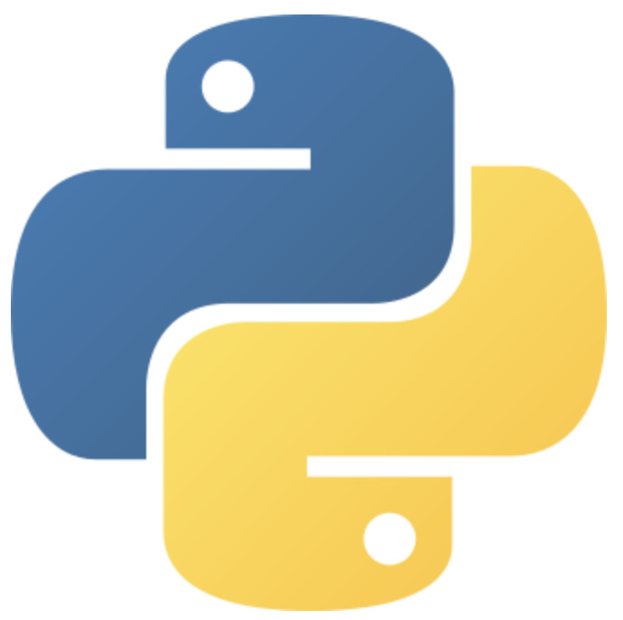

Programmeren
De naam "Raspberry Pi" volgt het fruit—thema dat vroeger vaak werd gebruikt door computerbedrijven, en is tegelijkertijd een knipoog naar de programmeertaal Python.
Coding met Scratch
Scratch is een gratis programmeertaal die beschikbaar is in meer dan 70 verschillende talen. Het is 's werelds grootste programmeercommunity gericht op kinderen en beginnende programmeurs. Scratch biedt een laagdrempelige introductie tot de wereld van programmeren, onder andere door het maken van digitale verhalen, games en animaties.
De Scratch Foundation is een non-profitorganisatie die het programma Scratch heeft ontworpen, ontwikkeld en beheerd. Het doel van Scratch is het verbeteren van:
- Kritisch denken
- Gemeenschapsgericht denken
- Probleemoplossend vermogen
- Creatief lesgeven
- Creatief leren
- Zelfexpressie
- Samenwerking
- Gelijkheid in computeronderwijs

Coding met Python
Python is een populaire programmeertaal die wordt gebruikt in:
- Webapplicaties
- Softwareontwikkeling
- Data science
- Machine learning
Python wordt vaak gekozen omdat het efficiënt, relatief eenvoudig te leren is en omdat er veel online bronnen beschikbaar zijn. Daarnaast kan Python op veel verschillende platforms draaien.
